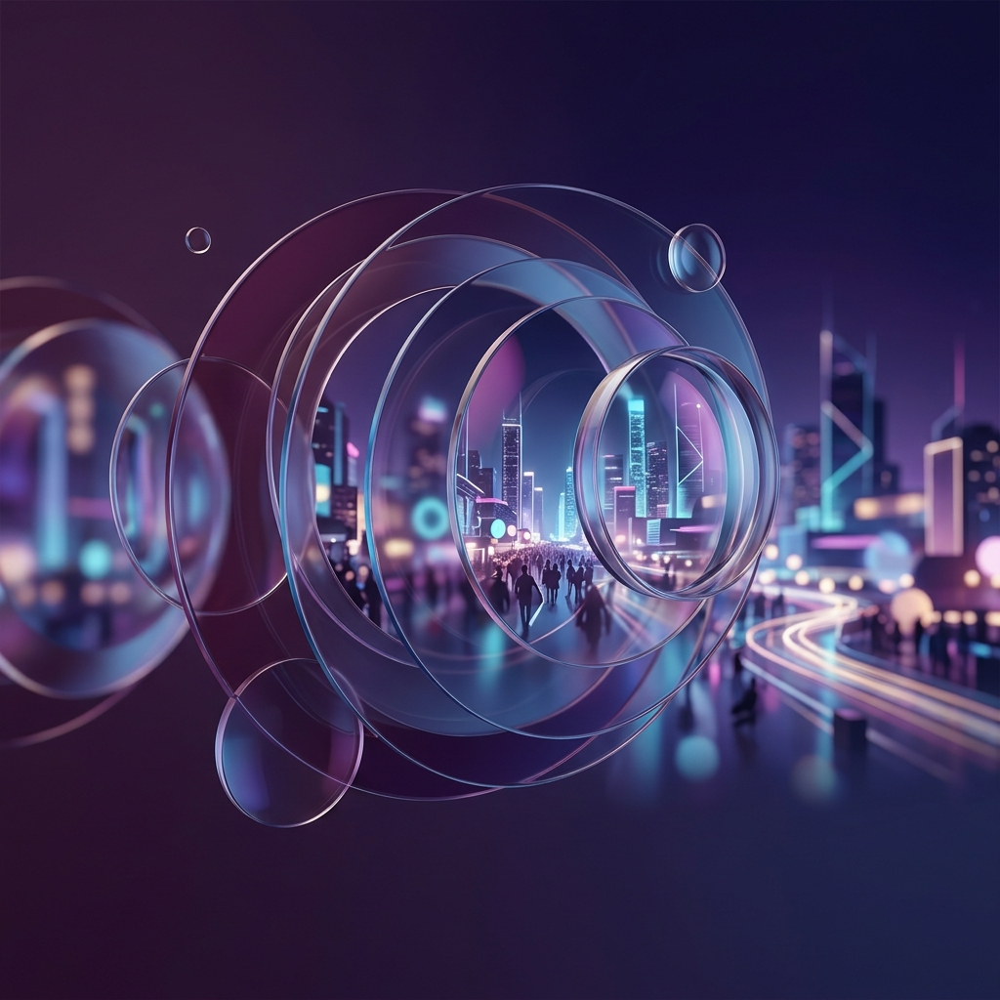

Sociološke Perspektive
Kada gledate vijesti, školu ili društvene mreže, što točno zapažate? Sociolozi koriste različite teorijske perspektive kako bi objasnili iste događaje na potpuno drugačije načine. Poznavanje ovih različitih kutova gledanja ključno je za razumijevanje šire slike društvenih procesa.
Prijelaz iz Tradicionalnog u Moderno
Sociologija je nastala kao pokušaj shvaćanja kaosa Industrijske i Francuske revolucije. Stari svijet (tradicija) se rušio, a rađao se novi (modernost). Klasični sociolozi pokušali su objasniti tu golemu tranziciju:
Auguste Comte
Koncept "Zakona triju stadija". Objašnjavanje svijeta evoluira.
Émile Durkheim
Fokusirao se na ono što ljude drži zajedno (solidarnost).
Karl Marx
Promjena ovisi isključivo o načinu materijalne proizvodnje u društvu.
Max Weber
Promjena u načinu društvenog razmišljanja i postupanju (Racionalizacija).
Tri Glavna Teorijska Pravca
Postoje tri glavna pristupa. Kliknite na svaki od njih s lijeve strane kako biste vidjeli na što se fokusiraju i koja im je glavna odlika.
Funkcionalizam
Društvo je kao ljudsko tijelo.
Promatrajući isti problem: Škola
Kako bi tri različita sociologa opisala tvoju školu? Zamislimo da su sva trojica došla na tvoj sat.
"Ova škola je super! Održava red."
Vidi školu kao organ koji vrši funkciju: uči vas redu, radu, priprema vas za posao i, brutalno iskreno, čuva vas s ulice dok su vam roditelji na poslu.
"Ova škola stvara poslušne radnike!"
Vidi školu kao aparat koji održava nejednakost. Bogata djeca idu u bolje školy, a škola nas uči poslušnosti sustavu. Mjesto borbe i kontrole!
"Gle kako profa razgovara s onim učenikom nazad."
Njega ne zanima sustav. On gleda mikrosvijet: kako klikanje kemijskom iritira profesora, kako se formiraju školske "bande" i kako etiketiranje učenika kao "lošeg" utječe na njegove ocjene.
Makrosociologija vs Mikrosociologija
Dvije od ovih teorija gledaju na društvo "iz helikoptera" (Makro), dok se jedna spušta "na razinu ulice" (Mikro). Pogledajmo radar grafikon koji to vizualizira.
-
🚁
Makro level (Velika slika)
Funkcionalizam i Konfliktna teorija. Proučavaju cijele institucije (školstvo, religiju, državu), zakone, ratove, velike društvene promjene. Ne bave se pojedincem.
-
🔬
Mikro level (Mala slika)
Simbolički interakcionizam. Proučava male grupe, svakodnevnu komunikaciju, govor tijela, simbole po kojima pripadamo grupama (npr. nošenje određene marke tenisica na odmoru).